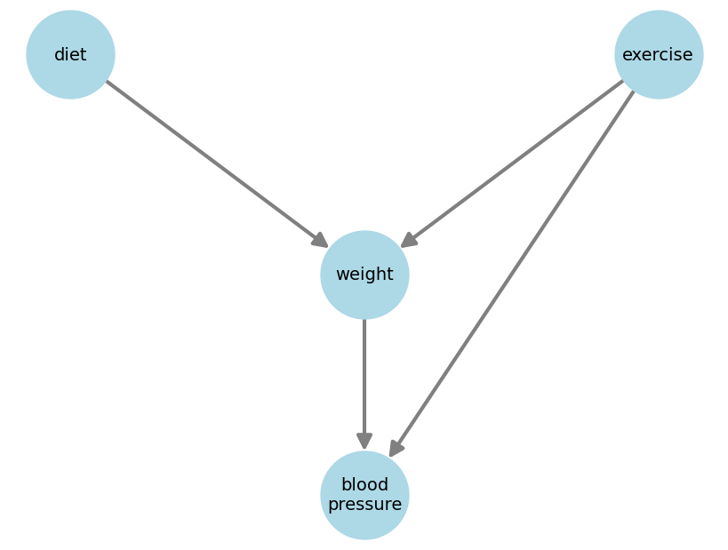
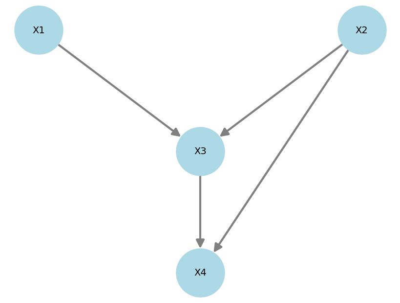
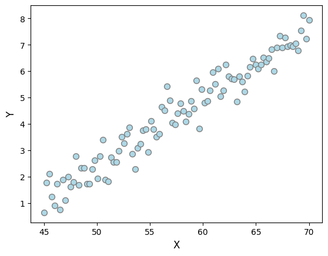

DAGs cont'd
On this page we will go a little deeper
TL;DR
Association can flow against arrows, causality cannot.
Directed acyclic graphs (DAGs) are an easy way of expressing your beliefs about a set of variables.
A DAG has one node per variable and a set of edges connecting the nodes. Also, edges must be directed and, by going around the graph following them, you should not be able to find any loops.
Below is a nice DAG that makes intuitive sense.

Given a node (say weight), a parent is a node that directly maps to it (diet and exercise).
Given a node (say weight), a child is a node that is directly mapped by it (blood pressure).
TL;DR
DAGs do not encode plain statistical independence, but conditional independence.
Take the following DAG:

It does not imply/encode that \(X1\) and \(X4\) are independent. It instead encodes the fact that, given all its parents (\(X3\) and \(X2\)), the node \(X4\) becomes independent of every one else (\(X1\)).
Mathematically, \(X1 \perp X4 \; | \; (X3, X2)\).
Thinking back at the blood pressure example, the graph says blood pressure is indeed dependent on the diet even if diet is not its parent. However, if one fixes a given weight and exercise level, then the diet would have no influence on an individual's blood pressure!
TL;DR
Data alone (without any expert knowledge) is insufficient to arrive at a single DAG.
Say you're given the data below, which clearly show \(X1\) and \(X2\) are strongly associated. Which DAG would represent it best?

\(X \rightarrow Y\) would be a reasonable first try... but if I told you \(X\) is body weight and \(Y\) is monthly chocolate consumption, then perhaps \(Y \rightarrow X\)?
Only because the plot shows \(X\) on the horizontal axis, it doesn't mean it is the cause of \(Y\) like we're used to thinking...
What if a nutritionist comes and says a third variable is missing, \(Z\), which represent one's metabolism. And that a better DAG would be \(Y \rightarrow Z \rightarrow X\)?
If even in the 2-variable case we require more assumptions to draw a sensible DAG, imagine how difficult the task would be with 20 interconnected variables. The process of finding DAGs from data and additional assumptions is called causal discovery.
TL;DR
A DAG highlights links, but an SCM tells you exactly how variables are linked, functionally.
DAGs tell you that two variables are linked, but won't tell you exactly how. A structural causal model (SCM), on the other hand, does exactly that.
Say you have a set of variables \(X_1,...,X_4\). A SCM is a collection of equations linking them:
where \(N_1,...,N_4\) are exogenous variables, also called noise variables. Noise variables are assumed to be jointly independent.
Each SCM is associated with a unique DAG.
TL;DR
Association can flow against arrrows, causality cannot.